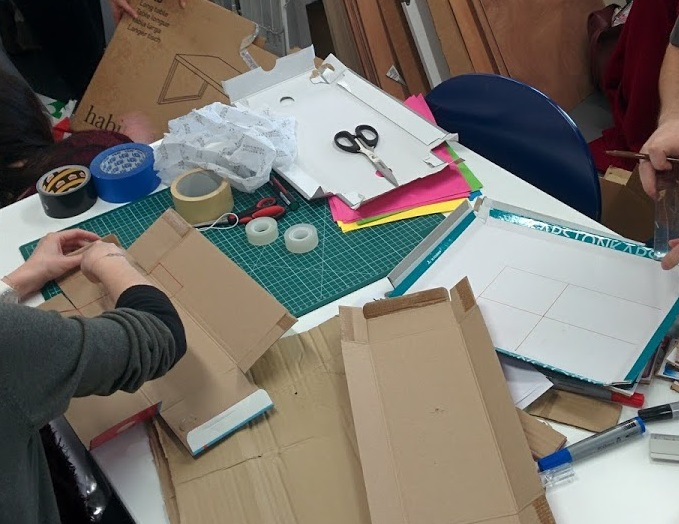
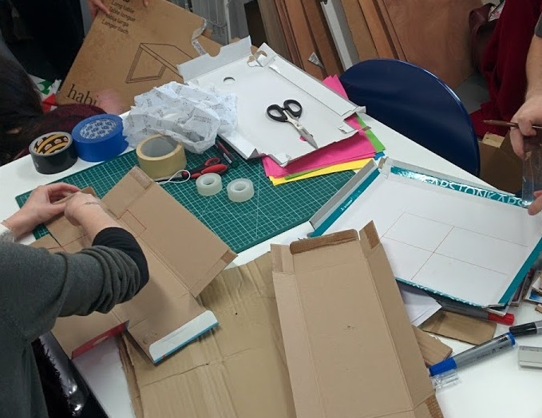

Zelidom - Promologis : focus the home ownership path on the clients' needs
Zelidom, division of Promologis (a social landlord), sell social housing (appartment and house) in the Occitanie region. With the objective to increase the sales number, they needed to understand their strenghts and weaknesses of their actual path to redefine their path and increase the clients' satisfaction and so the sales.

By interviewing clients - collaborators and analyzing the contact points, I understood all the factors and their influences on the clients' lived experience. I clustered all this new knowledge in experience map and blueprint which were presented to the project team.

Based on these findings, we co-constructed concrete solutions during a workshop. All these exchanges were more than welcome to create the new client path with the project team.

 



.jpg "Extract of users insights")